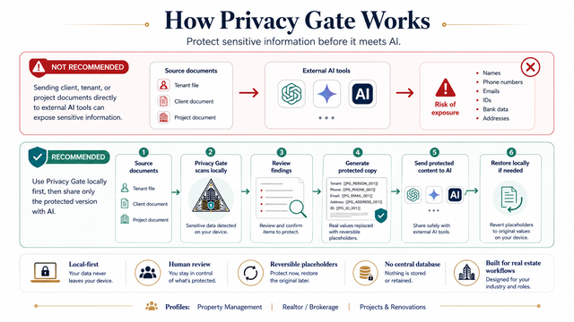

Fast product preview
- Text pasted in your browser
- Illustrative structured rules
- No upload and no account
- No document memory
LOCAL-FIRST PRIVACY FOR REAL ESTATE OPERATIONS
Review, replace, and safely reuse property-management, brokerage, and renovation documents—without sending the original data to a cloud scanner.
SAFE INTERACTIVE PREVIEW
This lightweight browser demonstration recognizes common structured U.S. identifiers. The Windows app performs the full Presidio analysis.
Why name detection is different here: this browser preview uses lightweight patterns, including a basic two-word-name illustration. The Windows app uses Microsoft Presidio with NLP context for names and other entities. Browser rules may still miss or misclassify context; do not use this preview as the final compliance check for real customer records.
HOW PRIVACY GATE WORKS
The original document stays on your PC. Privacy Gate creates a protected working copy for AI, then restores approved results locally when reversible placeholders are used.

THE COMPLETE WINDOWS WORKFLOW
Review U.S. PII, turn categories on or off, and add sensitive values manually.
Keep protected documents and reversible mappings secured for your Windows user.
Paste an AI answer back into Privacy Gate and locally restore the original identities.
PRODUCT TECHNICAL SHEET
Privacy Gate separates original data from the protected working copy, keeps restoration local, and lets the user review every finding before export.
Local PII analysis with U.S. recognizers, NLP context, industry rules, confidence review, category selection, and manual additions.
Paste business text or load selectable-text PDF, Word .docx and Excel .xlsx files. Scanned/image-only PDF OCR is not included in this release.
Create protected TXT, PDF, DOCX and XLSX copies with deterministic placeholders. Originals are never overwritten and restore mappings stay encrypted locally.
No mandatory Privacy Gate account or central document database. Protected library, mappings, and restore keys stay on the device.
Property Management, Realtor/Brokerage, and Projects & Renovations, with domain identifiers and customizable protection categories.
A stable authenticated connector can expose only protected library copies. Originals and reversible mappings are structurally excluded.
PRIVACY BY DESIGN
Privacy Gate is designed to support data-minimization, purpose-limitation, human-review, and privacy-by-design workflows. It provides technical safeguards; it does not by itself certify an organization as compliant.
START MANUAL. AUTOMATE WHEN READY.
The free workflow needs no API key. Local and cloud automations are optional extensions, clearly separated so customers always know when data may leave the PC.
Protect, save, copy, open ChatGPT or another AI, and restore the result locally.
Future localhost endpoint for n8n, watched folders, and internal workflows without a mandatory Privacy Gate cloud.
Customer-owned API keys or an AI PM LAB managed service for teams that want an automatic end-to-end flow.
Create a private HTTPS connector from the Windows app. AI can retrieve only protected Library copies; originals and restore mappings remain local.
QUICK START
WINDOWS 10 / 11 · macOS 12+
Full local Presidio engine, PDF/Word/Excel support, encrypted library, and reversible restore. No subscription or cloud account required for the core app.
The direct Windows installer and macOS packages are currently unsigned/not notarized, so antivirus software or Gatekeeper may show an unknown-publisher warning. Verify the published SHA-256 before installation. The Microsoft Store edition is signed and receives Store-managed updates.
Use Microsoft Store for signed installation and automatic updates, or download the unsigned 64-bit installer directly.
Native DMGs for Apple Silicon and Intel. Local Presidio engine, encrypted Keychain-backed library, PDF/Word/Excel workflow, restore, and optional MCP.
PRODUCT UPDATES
Leave your email to receive important releases, new file-format support, privacy features, and practical workflow ideas. No customer documents—ever.
OPEN SOURCE TRUST & RELEASE INTEGRITY
The Windows Microsoft Store edition is signed and distributed by Microsoft. Direct GitHub installers and current macOS DMGs remain unsigned; their SHA-256 checksums are published with every release.
Release artifacts are built from the public repository on GitHub-hosted runners. Maintainer roles, release controls, privacy guarantees, and dependency licenses are documented publicly.
LET'S DESIGN YOUR PRIVACY WORKFLOW
Need help with local automation, n8n, MCP, AI connections, or a workflow tailored to your real-estate operations? Tell us what you want to accomplish.